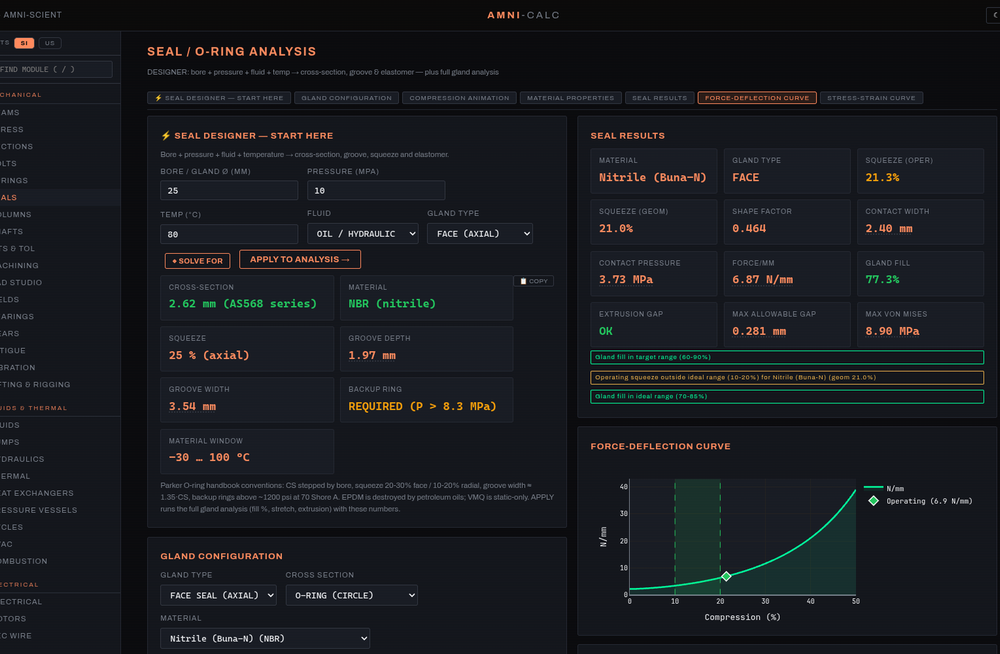

Free, in-browser, no sign-up. Theory and a worked example on every module.
Engineering calculator suite — 37 in-browser WASM modules with theory and worked examples.

Amni-Calc is a suite of 37 mechanical, electrical, fluid, thermal, manufacturing, and electrochemical engineering calculators that run entirely in your browser.
Mohr's circle, beam shear/moment/deflection, cross-section properties, columns (Euler/Johnson), shafts (torsion/critical speed), welds (AWS fillet/group polar), bearings (ISO 281 L10), and fatigue (Goodman/Soderberg/Gerber/ASME-Elliptic).
Bolt torque (nut-factor and detailed thread/face friction), preload scatter, PCC-1 sequences, Belleville catalog autoselect + coil/conical/wave springs with Wahl correction, O-ring seal design with industry-standard groove geometry, gland selection.
Moody diagram with explicit Colebrook solution, Bernoulli with minor losses, pump NPSH/affinity laws, heat conduction/convection/radiation, fin efficiency, LMTD/NTU heat exchangers, ASME pressure vessels, thermodynamic cycles (Carnot/Otto/Diesel/Brayton/refrigeration).
Ohm's law, AC power triangle, three-phase calculations, RC/RL transients, induction-motor synchronous speed and full-load amps, NEC 310.16 wire ampacity with voltage-drop checks, vibration isolator transmissibility, gear-tooth Lewis bending.
Nernst potential, Tafel and Butler-Volmer kinetics, Faraday-law mass deposition, corrosion-rate from current density, battery pack sizing with Peukert exponent, runtime/SOC, and series-parallel cell configurations.
Material database (yield, ultimate, modulus, density, thermal conductivity, specific heat) for structural alloys, stainless, polymers. Surface finish recommender, math handbook, equation reference, unit converter, and an indexed catalog of standards (ASME, ASTM, NEC, AWS, ISO).
Traditional engineering software falls into two camps.
In-browser calculators split the difference. They run anywhere a modern browser does — desktops, laptops, Chromebooks, tablets. They deploy instantly to a team without IT approval. And because computation is local, proprietary design inputs never leave the device. The page loads, executes the kernel against your inputs, and renders results — no server round trip.
WebAssembly matters here. JavaScript is great for UI but slow for dense numerical work like solving stiffness matrices, integrating beam deflection curves, or iterating Colebrook for friction factor.
Interactive charts are the other half. Comparing two gasket materials or three spring stacks benefits from seeing both curves on one plot with hover-readout. Plotly handles this well in the browser, and because everything is client-side, zooming and panning feel instantaneous — no server re-render, no spinner between clicks.
Each calculator has its own deep-dive page covering theory, equations, when to use it, and which standards it follows.
Shear, moment, and deflection for multi-support beams with interactive load placement.
Mohr's circle, principal stresses, max shear, von Mises, Tresca yield criterion, Kt.
Cross-section properties: area, centroid, moment of inertia, section modulus, radius of gyration.
Torque-preload (nut-factor), detailed thread/face friction, yield checks, preload scatter, stretch.
Helical, Belleville catalog + autoselect, conical, wave; stacks; F–δ curves that keep the op on-axis.
O-ring squeeze, gland design, friction estimate, extrusion-gap check, material selection.
Euler buckling, Johnson short-column transition, end-condition K factors, slenderness ratio.
Torsional stress, critical speed, key/keyway (DIN 6885), DIN 471 retaining rings, fatigue.
Fillet throat sizing per AWS, weld-group polar moment for eccentric loads, allowable strength.
ISO 281 L10 life, dynamic and static load, equivalent load under combined radial/axial.
Geometry (module, pitch, addendum), ratios, Lewis bending stress, contact ratio, mesh viz.
Goodman, Soderberg, Gerber, ASME-Elliptic mean-stress lines; endurance limit modifiers.
Natural frequency, isolator transmissibility, resonance check, damping ratio.
ISO limit fits, press-fit Lame pressure, torque capacity, assembly temperature, key length.
Speeds & feeds, tap drill, sheet-metal bend, hardness conversion, bolt-circle layout.
Sling tension, hitch factors, unequal-leg CoG, pad-eye/lug screening.
Parametric CSG modeler in the browser: primitives, booleans, mass properties, STL export.
Moody/Colebrook, Bernoulli, pipe designer (Sch 40), dP flow metering, minor losses.
Cylinder designer, extend/retract force & speed, intensification, gas accumulators.
NPSH available vs required, affinity laws, specific speed, system curve intersection.
Conduction (1D/multilayer), convection (Nu correlations), radiation, fin efficiency.
LMTD method, NTU-effectiveness, fouling resistance, parallel/counter/cross flow.
Thin-wall hoop/longitudinal, Lamé thick-wall, ASME VIII-1 minimum thickness.
Carnot, Otto, Diesel, Brayton, vapor compression refrigeration, COP and thermal efficiency.
Psychrometric properties, sensible/latent heat, mixing, cooling coil, evaporative cooling.
Stoichiometric AFR, adiabatic flame temperature, LHV/HHV, excess-air analysis.
Ohm's law, AC power triangle (P/Q/S), three-phase calcs, RC/RL transients, voltage drop.
Synchronous speed, slip, full-load amps, torque, starting current, motor service factor.
NEC 310.16 ampacity tables, voltage-drop check, conduit fill, breaker selection.
Nernst potential, Tafel/Butler-Volmer kinetics, corrosion rate, Faraday deposition.
Pack sizing (Wh, kWh), runtime, Peukert capacity, SOC estimation, series/parallel cells.
Yield, ultimate, modulus, density, k, cp for steels, aluminums, stainless, polymers.
Surface roughness Ra/Rz, achievable finishes by process (turning, grinding, lapping).
Calculus identities, Taylor series, common integrals, vector ops, complex numbers.
Searchable index of every formula in the suite, grouped by discipline and module.
Bidirectional SI ↔ US customary converter for force, pressure, energy, viscosity, more.
Cross-referenced index of ASME, ASTM, NEC, AWS, ISO standards used by each module.
Sidebar lists every calculator. Each opens with inputs on the left, charts and tables on the right. No project files, no save dialogs — state lives in the URL hash and in browser storage.
Numeric inputs use sensible engineering defaults. Unit toggles for SI and US customary. Material pickers pull from the shared database. Invalid combinations flag inline rather than silently producing garbage.
Interactive Plotly plots show the answer: shear/moment diagrams, load-deflection curves, temperature profiles, stress circles. Hover for exact values. Compare configurations by stacking them on one plot.
Right-click any chart to save as PNG for a report. Change inputs and the plot updates live. All computation is local, so large parameter sweeps run without network latency.
Amni-Calc runs entirely in your browser. Design inputs, material choices, and calculated results stay on your device — they are never transmitted to Amni-Scient or any third party. Browser local storage is used only to remember UI preferences (theme, last-opened tab) and cached material data. No accounts, no telemetry, no analytics of your engineering work.
The app is ad-supported on the informational landing pages (this page and the per-module pages). The calculator app itself, at /calc/, carries a single Ko-fi support panel and no AdSense banners so you can focus on the work.
Runs in any modern browser. No install, no sign-up.